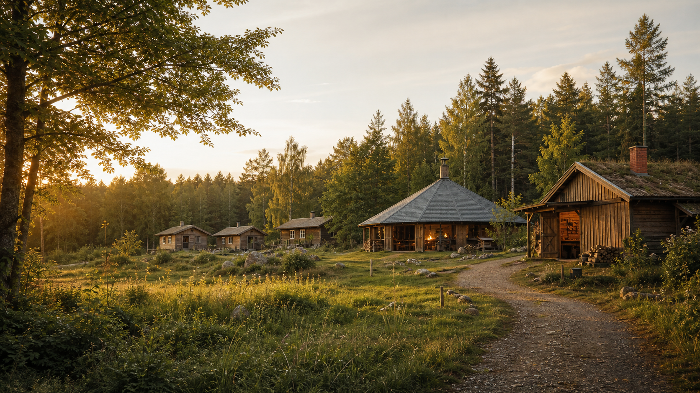
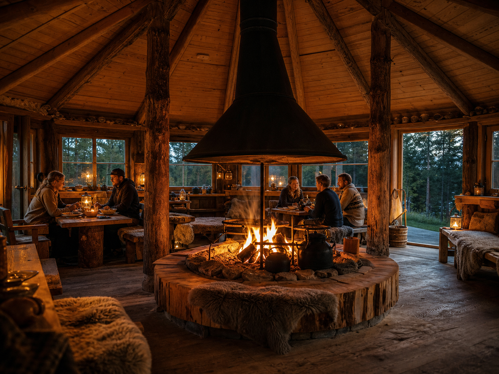
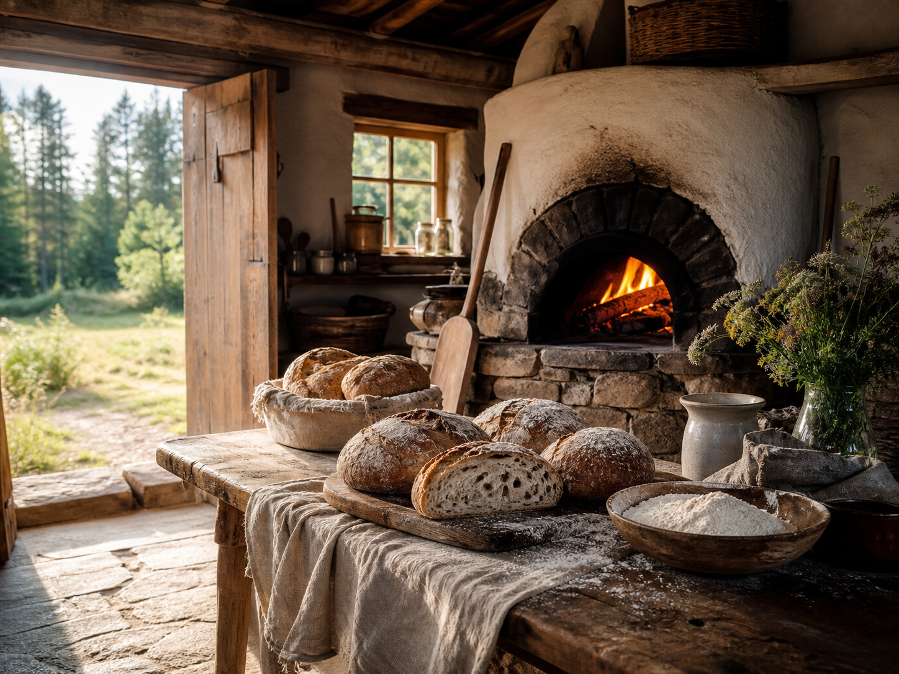
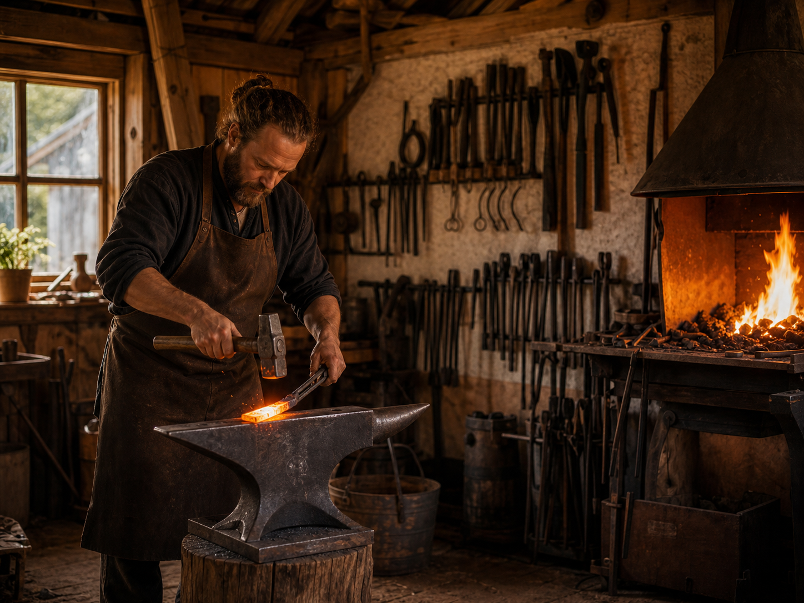
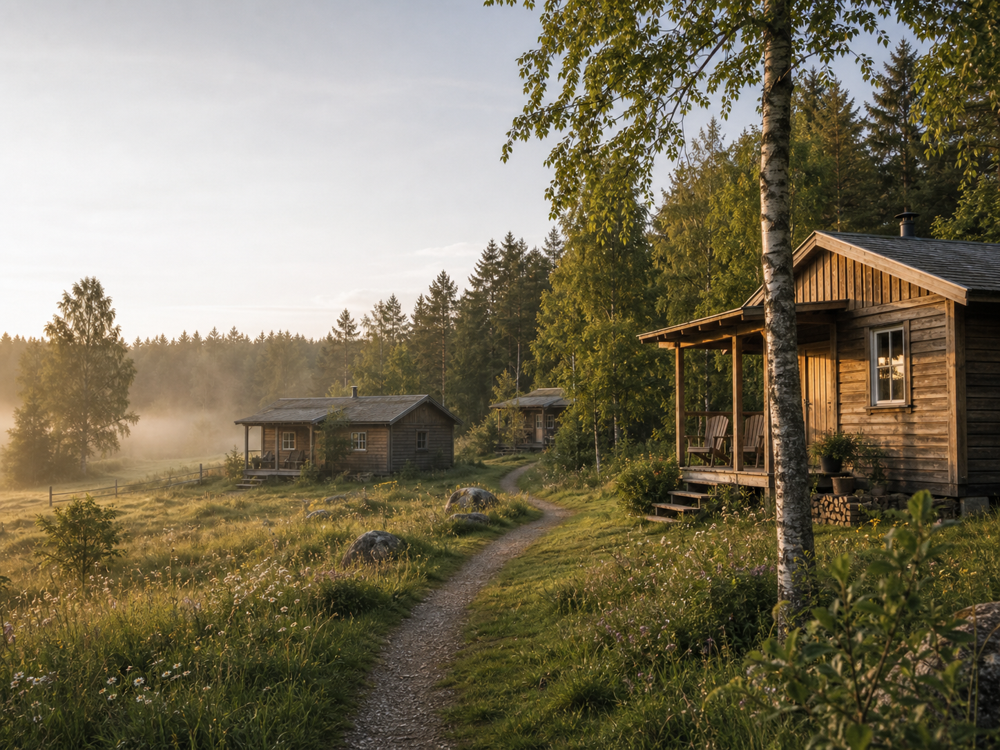
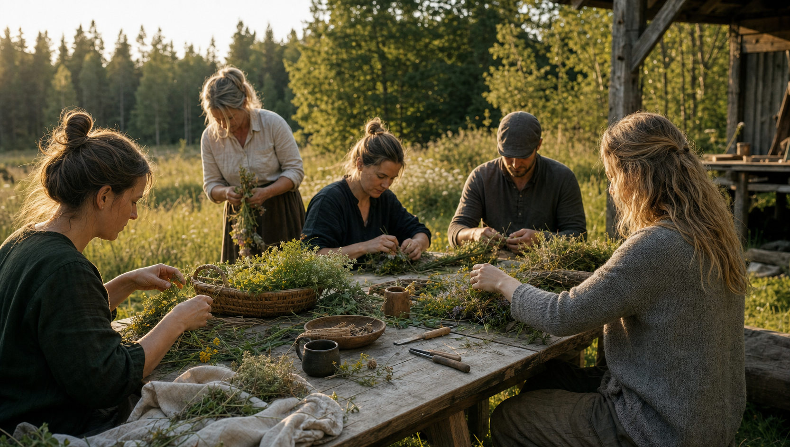
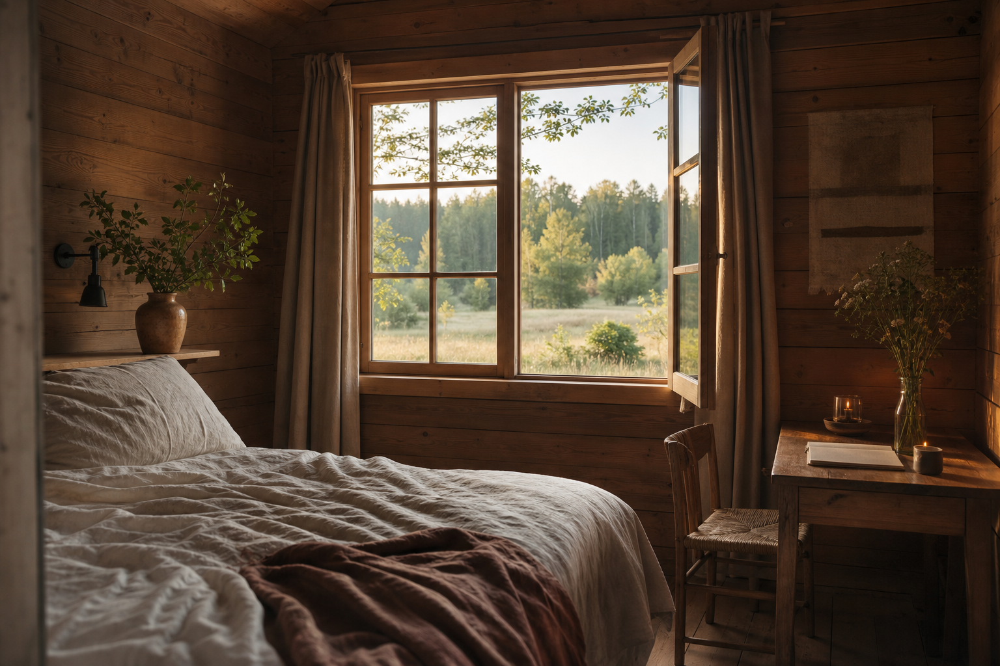
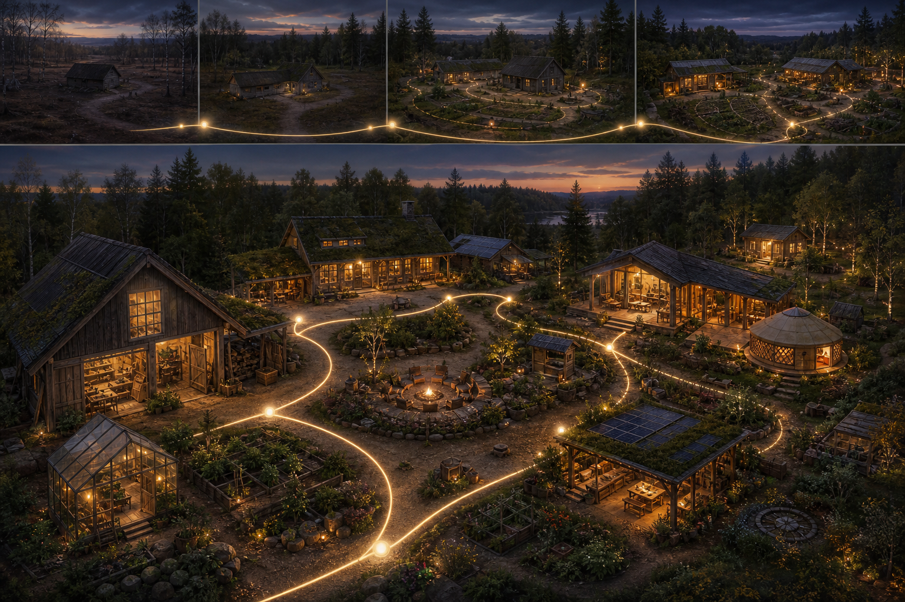
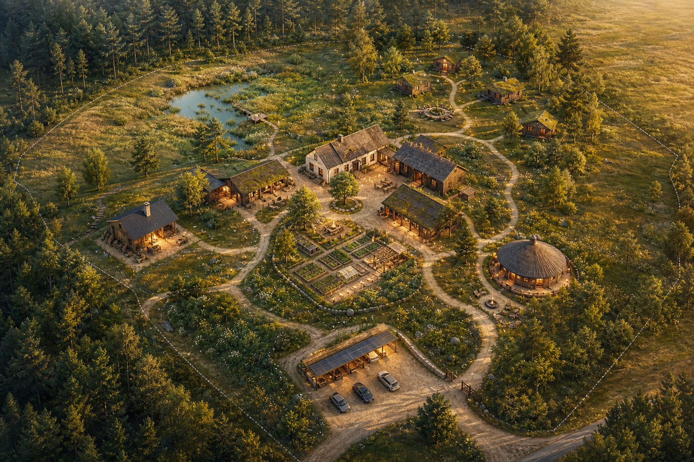
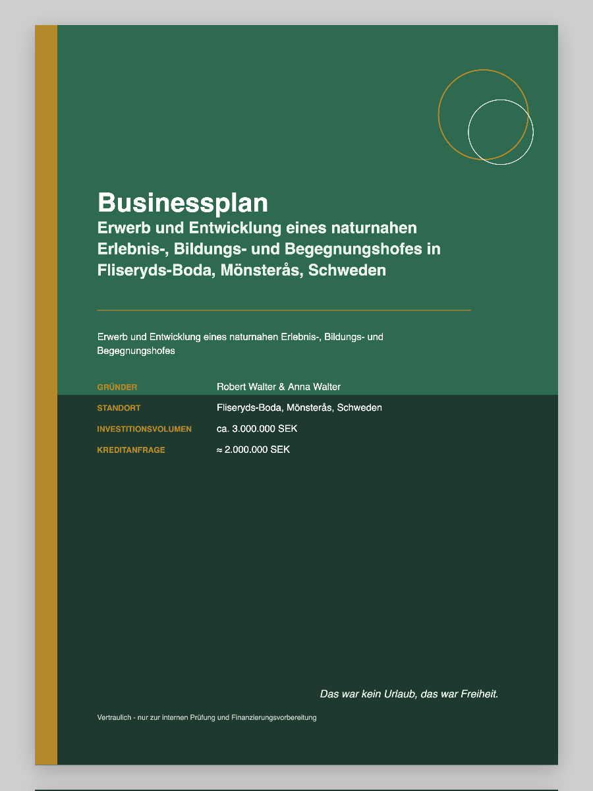

Frihet
Delta, betrakta, lära eller vara i fred.

Upplevelse-, utbildnings- och mötesgård
I Fliseryds-Boda växer en naturnära plats fram där människor kan övernatta, lära, baka, smida, äta tillsammans och komma närmare landskapet igen.
Ledande tanke
Gården är ingen semesterpark och ingen ren evenemangsyta. Den utvecklas som en plats som får växa fram: lugn, öppen, hantverksnära och ekonomiskt försiktig. Varje ny utvecklingsfas ska skapa användbarhet, möjliggöra intäkter och passa platsens karaktär.
Det särskilda är kombinationen av vistelse, kunskapsförmedling, regionala möten och verkliga verkstäder. Gäster konsumerar inte platsen. De upplever den, bidrar när de vill eller drar sig medvetet tillbaka.
Hållning
Delta, betrakta, lära eller vara i fred.
Trä, eld, arbete och utveckling förblir synliga.
Hantverk och erfarenhet hålls inte tillbaka, utan delas.
Landskapet är projektets grund, inte dekoration.
Erbjudanden
Ur affärsplanen växer en plats fram med tydliga, upplevelsebara områden: vistelse, verkstäder, gemensamma måltider, kurser och utrymme för människor som för kunskap vidare.
Gårdens sociala centrum: träbyggnad, eldstad, litet kök, bord, bänkar, workshops, måltider, kultur och små bröllop.
Små, enkla gästhus med el, isolering, uppvärmning, vatten och möjlighet att laga mat.
Nybörjarkurser, beställningsarbeten, öppna verkstadsformat och handgjorda produkter.
Bakkurser, bröd, gårdsförsäljning, matlagningsaktiviteter och gemensamma dagar vid vedugnen.
Externa kursledare, konstnärer, pedagoger och hantverkare kan vara med och forma platsen.
Atmosfär
Motiven visar gårdens erfarenhetsrum: att anlända, samlas, arbeta med händerna och uppleva enkla saker med ny medvetenhet.







Plats
Fastigheten omfattar cirka 5,3 hektar med huvudbyggnad, ett nästan färdigställt fritidshus, stall- och ladubyggnader, ekonomibyggnader och öppna ytor. Utvecklingen sker inte mot platsen, utan utifrån det som redan finns.

Genomförande
Utvecklingen följer en tydlig ordning: infrastruktur, första uthyrningsbarhet, möten, erbjudanden året runt, därefter gästhus och konsolidering.
Månad 0 till 6
Ta över gården, förbereda brunn och avlopp för slutlig utbyggnad, färdigställa fritidshuset och möjliggöra de första intäkterna.
Köp, infrastruktur, fritidshus och reserver.
Beroende på eget arbete och stegvis utbyggnad.
Konservativ omsättningsnivå utan massturism.
Grundare
Robert bidrar med trädgårds- och landskapsanläggning, stuckatörarbete, erfarenhet av timmer- och snickeriarbete, smide och en mycket hög andel eget arbete. Anna kompletterar projektet med mat, näringsrådgivning, gastronomi, kursledning, gästfrihet och befintlig yrkesmässig stabilitet i Sverige.
Denna kombination är den ekonomiska kärnan: gården kan växa långsamt eftersom mycket utvecklas med eget arbete och tidiga intäkter inte beror på en enda stor öppning.
Byggnation, infrastruktur, smedja, projektledning och praktiskt genomförande.
Bagerihus, livsmedel, kurser, gästomsorg och organisation.
Gästresa
Orientering, lugn, eld, första blicken mot verkstäder och naturytor.
Smedja, bagerihus, natur, möten eller tillbakadragande.
Delta, samtala, vilja komma tillbaka.
Nästa steg
För finansiering, samarbeten och framtida gäster behöver projektet en tydlig, offentlig berättelse. Den fullständiga affärsplanen finns kvar som utförligt arbets- och bankunderlag.
